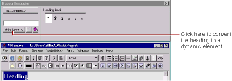
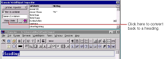
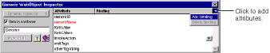

PATH
Documentation > WebObjects 4.5 >
Tools and Techniques
Generic WebObjects
You can use the generic WebObject element to create a dynamic version of any HTML element.
To create a dynamic version of a standard HTML element:
-
Create the element (say, a heading) and select it.
-
In the Inspector, click Make Dynamic.

If the element has no specific dynamic counterpart, it becomes a generic WebObject element.

To create a generic WebObject corresponding to any HTML element (even ones not supported directly by WebObjects Builder):
-
Click
in the toolbar.
-
Bring up the inspector.

A generic WebObject element has one required attribute, elementName
, which specifies what type of element should be generated at run time.
For example, imagine that a future version of HTML adds a new container element, which you would like to generate dynamically in your component. You would:
-
Double click in the binding column next to elementName
. Type the name of the container in quotes.
If the name isn't in quotes, WebObjects assumes it is a binding that should be resolved at run time. You might use that technique if you wanted to choose the type of element programmatically rather than specifying it in advance.
-
Check "Element is container".
-
Use the Add binding item in the inspector's binding pull-down list to specify any additional properties of the element that don't appear in the inspector.
© 1999 Apple Computer, Inc. – (Last Updated July 27 99)